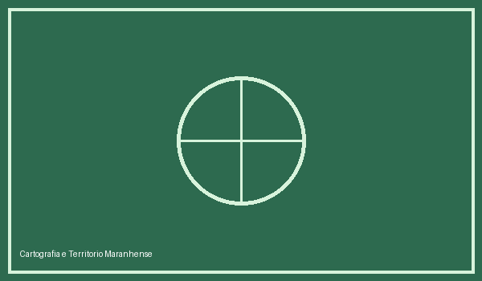
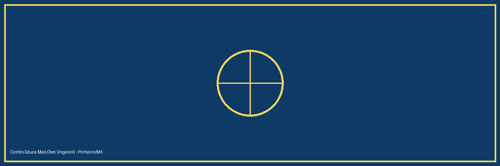
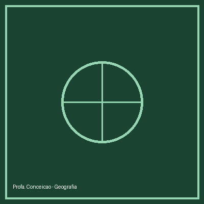
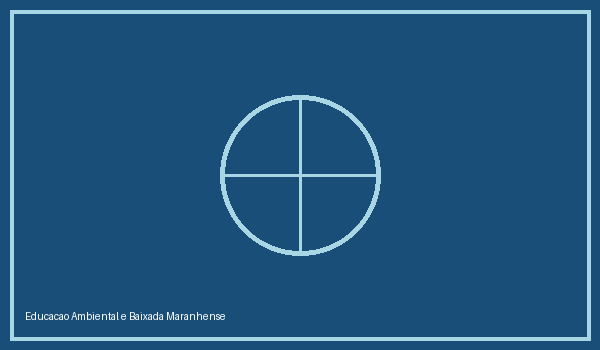

Cartografia Social e Território
Oficinas práticas de leitura de mapas, coordenadas geográficas e mapeamento comunitário em Pinheiro - MA.


Docente de Geografia | Centro Educa Mais Dom Ungarelli
Pinheiro - Maranhão
Olá! Sou a Professora Conceição, educadora apaixonada pelo ensino de Geografia no ensino médio integral no Centro Educa Mais Dom Ungarelli, localizado em Pinheiro, Maranhão.
Meu trabalho busca conectar os conceitos geográficos — como cartografia, geopolítica, climatologia e estudos socioambientais — à realidade local da Baixada Maranhense, estimulando o protagonismo juvenil e o pensamento crítico dos estudantes.

Oficinas práticas de leitura de mapas, coordenadas geográficas e mapeamento comunitário em Pinheiro - MA.

Estudo de campo e debates sobre recursos hídricos, ecossistemas locais e preservação ambiental.
Entre em contato para parcerias pedagógicas, projetos escolares ou informações sobre as aulas: